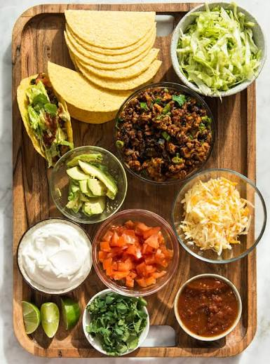

🌮 NUESTROS TACOS
¡Elegí tu favorito!

Tacos de carne
Carne sabrosa con verduras frescas y limón.
Tacos mexicanos
Una combinación llena de sabor para compartir.
¡BIENVENIDO A NUESTRA COCINA!
Ingredientes frescos, mucho sabor y una experiencia para disfrutar.
DESCUBRÍ LA RECETA ↓¡Elegí tu favorito!

Carne sabrosa con verduras frescas y limón.
Una combinación llena de sabor para compartir.
Explorá otras ideas para preparar tus tacos.